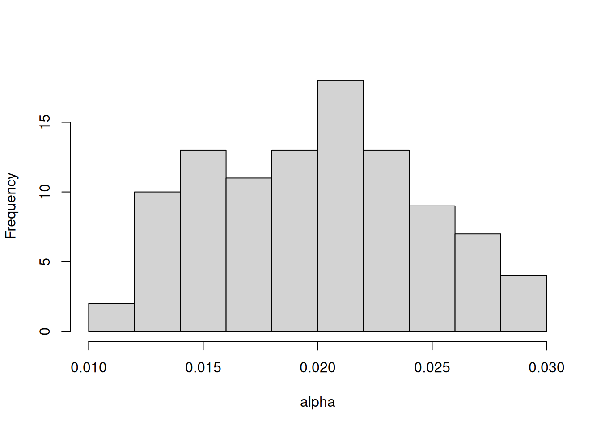
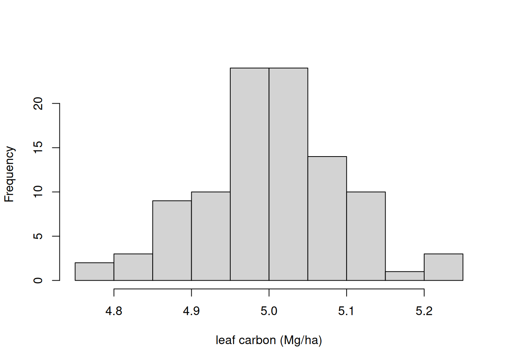
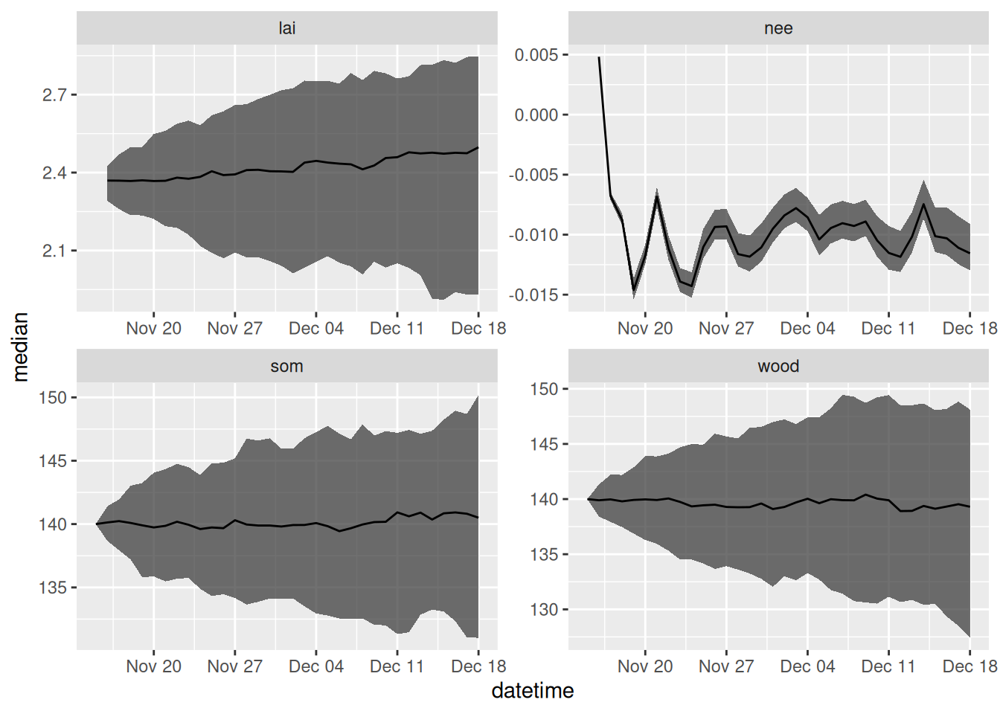
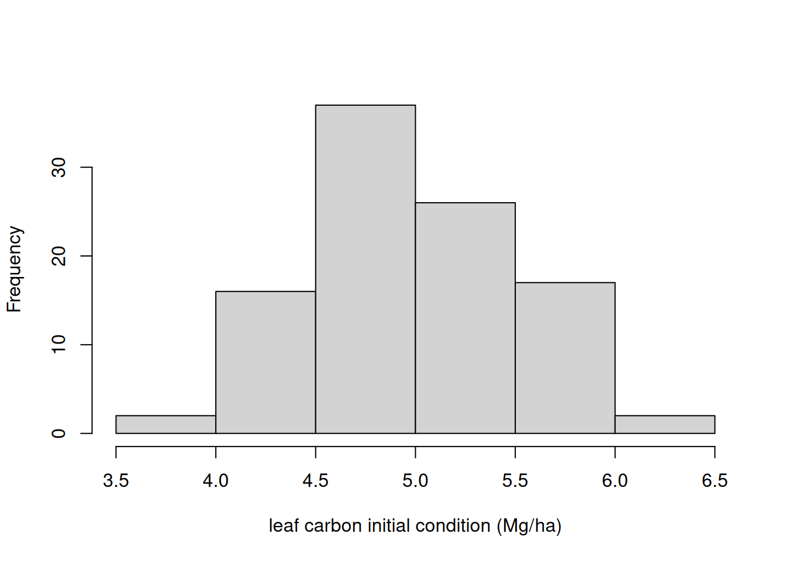
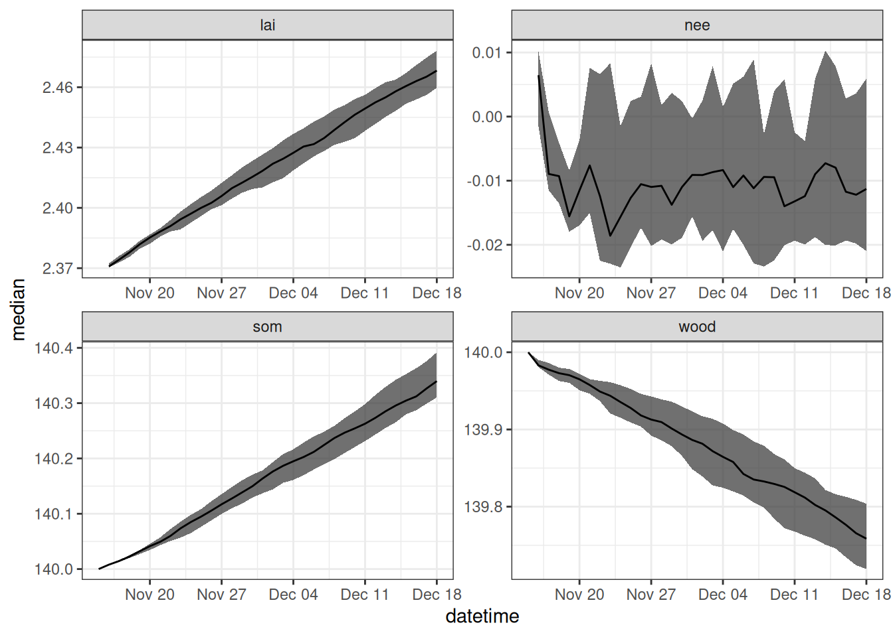

library(tidyverse)
library(lubridate)
source("R/helpers.R")
source("R/forest_model.R")14 Propagating uncertainty
This chapter applies the concepts in Chapter 5 to the forest process model introduced in Chapter 13. If you have not reviewed Chapters 5 and 13 yet, I recommend doing that as a foundation for this chapter.
14.1 Setting up simulations
Set simulation dates.
sim_dates <- seq(as_date("2023-11-15"),length.out = 34, by = "1 day")Set site identifier.
site <- "OSBS"14.1.1 Baseline parameters
These are the parameters that will be used for all the simulations except for the simulation where parameter uncertainty is propagated. Note that now, we are setting the number of ensemble members (ens_members) to 100 instead of 1 as we did in the previous chapter. This requires us to create a vector of values for each parameter so that each of the 100 ensemble members can be assigned parameter values.
ens_members <- 100
params <- list()
params$alpha <- rep(0.02, ens_members)
params$SLA <- rep(4.74, ens_members)
params$leaf_frac <- rep(0.315, ens_members)
params$Ra_frac <- rep(0.5, ens_members)
params$Rbasal <- rep(0.002, ens_members)
params$Q10 <- rep(2.1, ens_members)
params$litterfall_rate <- rep(1/(2.0*365), ens_members) #Two year leaf lifespan
params$litterfall_start <- rep(200, ens_members)
params$litterfall_length<- rep(70, ens_members)
params$mortality <- rep(0.00015, ens_members) #Wood lives about 18 years on average (all trees, branches, roots, course roots)
params$sigma.leaf <- rep(0.0, ens_members) #0.01
params$sigma.wood <- rep(0.0, ens_members) #0.01 ## wood biomass
params$sigma.soil <- rep(0.0, ens_members)# 0.01
params <- as.data.frame(params)14.1.2 Baseline initial conditions
These are the initial conditions that will be used for all the simulations except for the simulation where initial conditions uncertainty is propagated. Note that we also create our output array here, as described in Chapter 13.
#Set initial conditions
output <- array(NA, dim = c(length(sim_dates), ens_members, 12)) #12 is the number of outputs
output[1, , 1] <- 5 # air temperature; degrees C
output[1, , 2] <- 140 # PAR; umol/m2/sec
output[1, , 3] <- 140 # day of year14.1.3 Baseline drivers
These are the driver data that will be used for all the simulations except for the simulation where driver data uncertainty is propagated. Here, we use the mean of the weather forecast ensemble.
inputs <- get_forecast_met(site = site, sim_dates, use_mean = TRUE)
inputs_ensemble <- assign_met_ensembles(inputs, ens_members)14.2 Parameter uncertainty
Our model has 13 parameters. Each of them requires a value that is likely not known with perfect certainty. Representing parameter uncertainty involves replacing the single value for each parameter with a distribution. The distribution can be from literature reviews, a best guess, or the outcome of a calibration exercise. If the calibration exercise is Bayesian (see Chapter 17), the distribution of the parameter before calibration can be referred to as a prior, and after calibration as a posterior. Sampling from the parameter distribution provides values for the parameter that are assigned to each ensemble member.
In many cases, a sensitivity analysis can be used to determine which parameters to focus on for uncertainty estimation. Briefly, a sensitivity analysis runs a model many times using different combinations of parameter values to identify the parameters for which changes in value lead to large changes in model predictions. If a model is not particularly sensitive to parameter (i.e., changes in that parameter value do not strongly affect model predictions), then the overall prediction uncertainty is less likely to be strongly influenced by the uncertainty in that parameter. In practice, the values for less sensitive parameters are often held at a single value to avoid unnecessary computation. Other parameters are so well known that they are also held at a single value (e.g., the gravitation constant).
In this example, I focus only on propagating the uncertainty associated with one parameter (alpha) that represents the light use efficiency of photosynthesis. All other parameters are held at their baseline values.
new_params <- params
new_params$alpha <- rnorm(ens_members, params$alpha, sd = 0.005)This results in alpha having the following distribution Figure 14.1:

Now, we use the new_params as the parameters in the simulation.
for(t in 2:length(sim_dates)){
output[t, , ] <- forest_model(t,
states = matrix(output[t-1 , , 1:3], nrow = ens_members) ,
parms = new_params,
inputs = matrix(inputs_ensemble[t ,, ], nrow = ens_members))
}
parameter_df <- output_to_df(output, sim_dates, sim_name = "parameter_unc")Figure 14.2 shows the forecast that only includes parameter uncertainty.
parameter_df |>
filter(variable %in% c("lai", "wood", "som", "nee")) |>
summarise(median = median(prediction, na.rm = TRUE),
upper90 = quantile(prediction, 0.95, na.rm = TRUE),
lower90 = quantile(prediction, 0.05, na.rm = TRUE),
.by = c("datetime", "variable")) |>
ggplot(aes(x = datetime)) +
geom_ribbon(aes(ymin = lower90, ymax = upper90), alpha = 0.7) +
geom_line(aes(y = median)) +
facet_wrap(~variable, scale = "free") +
theme_bw()14.3 Process uncertainty
Process uncertainty arises because all models are simplifications of reality. We can use random noise to capture the dynamics that are missing from the model. The random noise is added to each state at the end of the model time step. The random noise is normally distributed with a mean equal to the model prediction for that time step and the standard deviation equal to the parameters sigma.leaf (or leaves), sigma.wood (for wood), and sigma.soil (SOM). The result is a random walk that is guided by the mean prediction of the process model.
Process uncertainty can be removed by setting the standard deviations equal to 0. Here we add in process uncertainty by setting the standard deviation to a non-zero value. The standard deviations (i.e., the values of sigma.leaf, sigma.wood, and sigma.soil) can be determined using state-space calibration of the ecosystem model. You can learn more about state-space modeling in Dietze (2017)
new_params <- params
new_params$sigma.leaf <- rep(0.1, ens_members)
new_params$sigma.wood <- rep(1, ens_members) #0.01 ## wood biomass
new_params$sigma.soil <- rep(1, ens_members)# 0.01As an example, Figure 14.3 shows the distribution in the noise that is added the leaf state at each time step.

Now, we run the model with process uncertainty.
for(t in 2:length(sim_dates)){
output[t, , ] <- forest_model(t,
states = matrix(output[t-1 , , 1:3], nrow = ens_members) ,
parms = new_params,
inputs = matrix(inputs_ensemble[t ,, ], nrow = ens_members))
}
process_df <- output_to_df(output, sim_dates, sim_name = "process_unc")Figure 14.4 shows the forecast that only includes process uncertainty.
process_df |>
filter(variable %in% c("lai", "wood", "som", "nee")) |>
summarise(median = median(prediction, na.rm = TRUE),
upper90 = quantile(prediction, 0.95, na.rm = TRUE),
lower90 = quantile(prediction, 0.05, na.rm = TRUE),
.by = c("datetime", "variable")) |>
ggplot(aes(x = datetime)) +
geom_ribbon(aes(ymin = lower90, ymax = upper90), alpha = 0.7) +
geom_line(aes(y = median)) +
facet_wrap(~variable, scale = "free")
14.4 Initial conditions uncertainty
Initial conditions uncertainty is the spread in the model states at the first time-step of a forecast. This spread would be due to a lack of measurements (and thus no direct knowledge of the state) or uncertainty in measurements (and thus a spread in the state values because we cant perfectly observe them). Here we represent initial condition uncertainty by generating a normal distribution with a mean equal to the observed value (or our best guess) and a standard deviation that represents measurement uncertainty. We update the initial starting point in the forecast with this distribution.
#Set initial conditions
new_output <- array(NA, dim = c(length(sim_dates), ens_members, 12)) #12 is the number of outputs
new_output[1, , 1] <- rnorm(ens_members, 5, 0.5)
new_output[1, , 2] <- rnorm(ens_members, 140, 10)
new_output[1, , 3] <- rnorm(ens_members, 140, 20)As an example, Figure 14.5 shows the distribution in the noise that is added the initial leaf state.

Now, we run the model with initial conditions uncertainty.
for(t in 2:length(sim_dates)){
new_output[t, , ] <- forest_model(t,
states = matrix(new_output[t-1 , , 1:3], nrow = ens_members) ,
parms = params,
inputs = matrix(inputs_ensemble[t ,, ], nrow = ens_members))
}
initial_conditions_df <- output_to_df(new_output, sim_dates, sim_name = "initial_unc")Figure 14.6 shows the forecast that only includes initial conditions uncertainty.
initial_conditions_df |>
filter(variable %in% c("lai", "wood", "som", "nee")) |>
summarise(median = median(prediction, na.rm = TRUE),
upper90 = quantile(prediction, 0.95, na.rm = TRUE),
lower90 = quantile(prediction, 0.05, na.rm = TRUE),
.by = c("datetime", "variable")) |>
ggplot(aes(x = datetime)) +
geom_ribbon(aes(ymin = lower90, ymax = upper90), alpha = 0.7) +
geom_line(aes(y = median)) +
facet_wrap(~variable, scale = "free") +
theme_bw()14.5 Driver uncertainty
The uncertainty in the weather forecasts comes directly from the 31 ensemble members provided by the NOAA Global Ensemble Forecasting System (GEFS). The ensemble is generated by slightly changing (perturbing) the initial states in the weather model before starting the forecast. Due to the chaotic nature of the atmosphere, these small differences get amplified over time, resulting in spread that increases further in the future.
new_inputs <- get_forecast_met(site = site, sim_dates, use_mean = FALSE)
new_inputs_ensemble <- assign_met_ensembles(new_inputs, ens_members)As an example, Figure 14.7 shows 31 ensemble members from a single 35-day forecast generated by NOAA GEFS.
Now, we run the model with driver uncertainty.
for(t in 2:length(sim_dates)){
output[t, , ] <- forest_model(t,
states = matrix(output[t-1 , , 1:3], nrow = ens_members) ,
parms = params,
inputs = matrix(new_inputs_ensemble[t ,, ], nrow = ens_members))
}
drivers_df <- output_to_df(output, sim_dates, sim_name = "driver_unc")Figure 14.8 shows the forecast that only includes driver uncertainty.
drivers_df |>
filter(variable %in% c("lai", "wood", "som", "nee")) |>
summarise(median = median(prediction, na.rm = TRUE),
upper90 = quantile(prediction, 0.95, na.rm = TRUE),
lower90 = quantile(prediction, 0.05, na.rm = TRUE),
.by = c("datetime", "variable")) |>
ggplot(aes(x = datetime)) +
geom_ribbon(aes(ymin = lower90, ymax = upper90), alpha = 0.7) +
geom_line(aes(y = median)) +
facet_wrap(~variable, scale = "free") +
theme_bw()
14.6 Problem set
The problem set is located in process-model-uncert.qmd in https://github.com/frec-5174/book-problem-sets. You can fork the repository or copy the code into your own quarto document